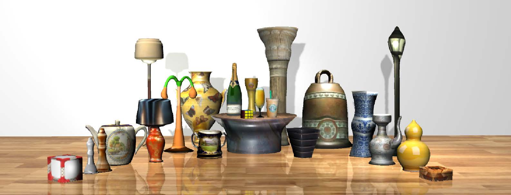
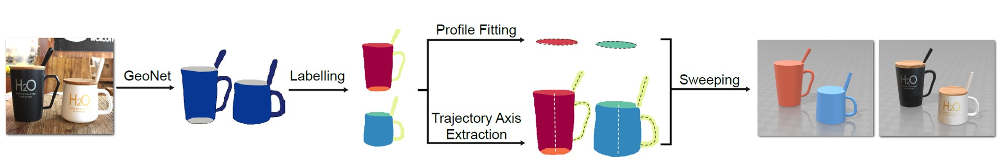
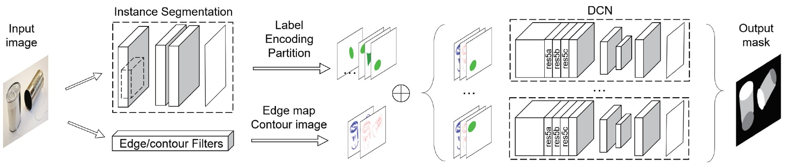
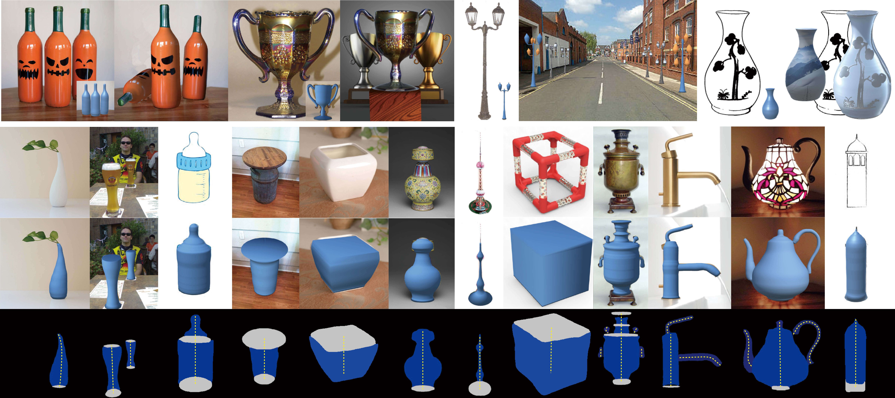

This paper presents a fully automatic framework for extracting editable 3D objects directly from a single photograph. Unlike previous methods which recover either depth maps, point clouds, or mesh surfaces, we aim to recover 3D objects with semantic parts and can be directly edited. We base our work on the assumption that most human-made objects are constituted by parts and these parts can be well represented by generalized primitives. Our work makes an attempt towards recovering two types of primitive-shaped objects, namely, generalized cuboids and generalized cylinders. Qualitative and quantitative experiments show that our algorithm can recover high quality 3D models and outperforms existing methods in both instance segmentation and 3D reconstruction.
 The whole pipeline. Our method takes as input a single photograph and extracts its semantic part masks labeled as cylinder profile, cuboid profile, cylinder body, etc., which are then used in a sweeping procedure to construct a textured 3D model.
 The network structure. The structure of our GeoNet is composed by an instance segmentation network (Mask R-CNN) and a deformable convolutional network. The net outputs instance masks labeled as semantic parts (profiles, bodies).
You can download our dataset with this Onedrive link.
This folder in our dataset is including 11657 images with cubes and cylinders. The real dataset contains about 6000 unannotated images from ImageNet, 774 annotated images from Xiao et al., and 4883 images collected from the Internet.
Annotation of each image by segmentation label methods: We use color to encode the instance and label information.
Example is like below:
| Label | Color | instance ID |
| Cylinder - top face | (10, 10, 200) | 1 |
| Cylinder - top face | (20, 20, 200) | 2 |
| Cylinder - body | (10, 0, 200) | 1 |
| Cube - top face | (10, 10, 255) | 1 |
| Cube - body | (10, 0, 255) | 1 |
| Grip | (10, 0, 150) | 1 |
This is further separated into 8183 training images and 3474 testing images.

Please cite these papers in your publications if it helps your research:
@article{xin2018autosweep,
title={AutoSweep: Recovering 3D Editable Objects from a Single Photograph},
author={Xin, Chen and Li, Yuwei and Luo, Xi and Shao, Tianjia and Yu, Jingyi and Zhou, Kun and Zheng, Youyi},
journal={IEEE transactions on visualization and computer graphics},
year={2018},
publisher={IEEE}
}